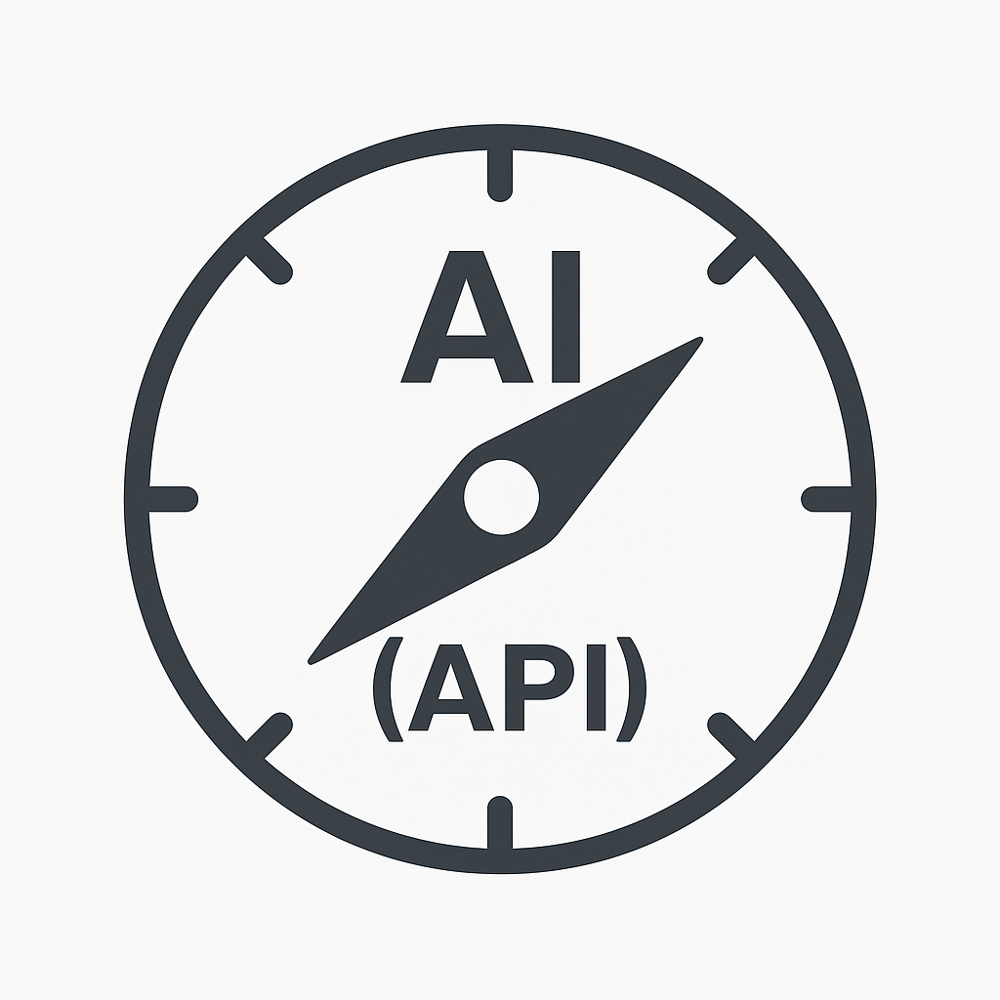
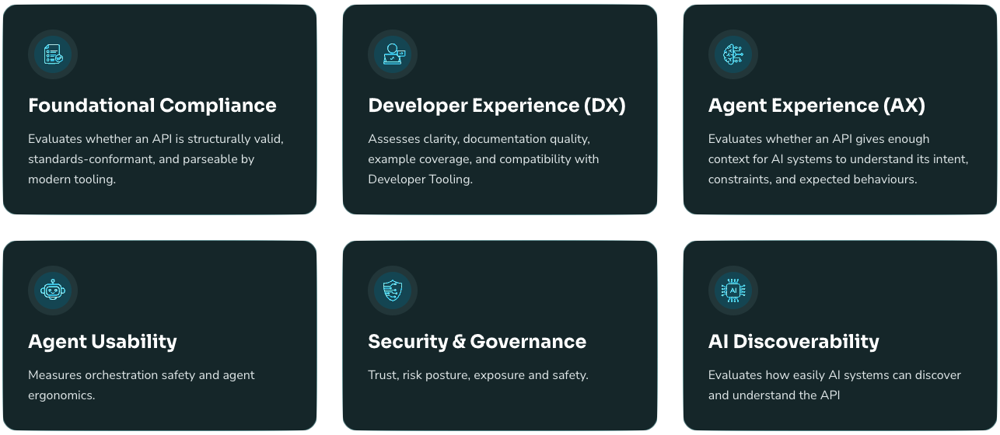
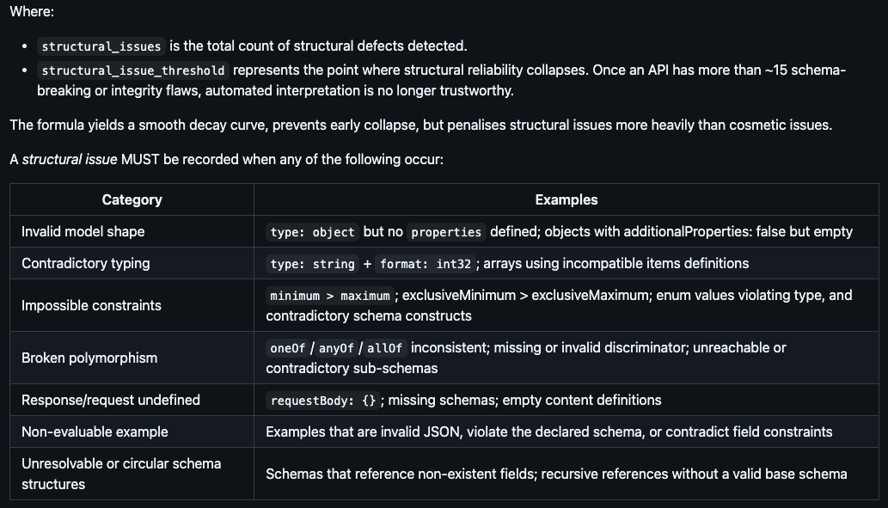
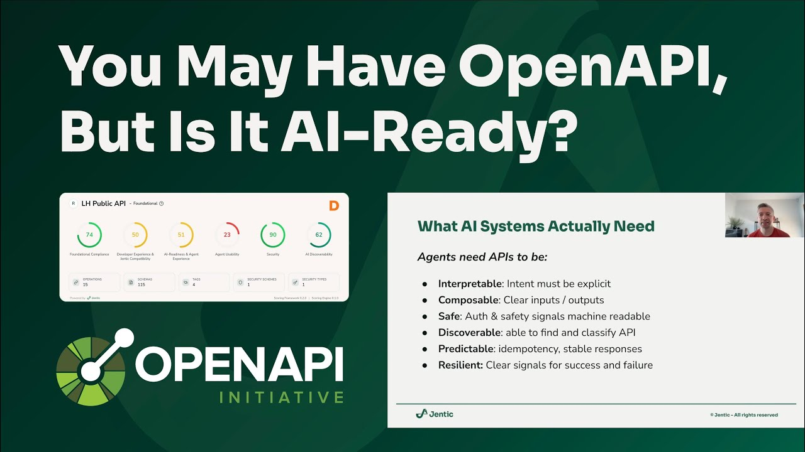

API Scoring for AI Readiness
(18) What AI Systems Actually Need
Agents need APIs to be:
- Discoverable: able to find and classify API
- Interpretable: intent must be explicit
- Composable: clear inputs / outputs
- Safe: authNZ & safety signals machine readable
- Predictable: idempotency, stable responses
- Resilient: clear signals for success and failure
(19) You Can't Improve What You Can't Measure

AI-readiness starts with understanding your current API landscape
(20) API AI-Readiness Framework
Evaluates APIs across six human & AI-readiness dimensions

See: [https://github.com/jentic/api-ai-readiness-framework]
(21) AI-Readiness Scorecard

See: [https://jentic.com/scorecard]
(22) Foundational Compliance
- Evaluates if an API is structurally valid, standards-compliance, and parseable by
tooling.
| Signal |
Description |
Normalisation |
Spec Validity |
Checks whether the API parses as a valid OpenAPI |
binary |
Resolution Completeness |
What proportion of $ref references successfully resolve |
coverage |
Lint Results |
Aggregated quality score from linter diagnostics, weighted by severity |
inverse weighted categorical |
Structural Integrity |
Measures whether the API's underlying data model is coherent enough for automated
reasoning (semantic or logical defects that impact reliable interpretation)
|
logarithmic dampening |
(23) Foundational Compliance - Structural Integrity
structural_integrity = max(0, 1 - log10(1 + structural_issues) / log10(1 + structural_issue_threshold))

(24) AI Discoverability
- Evaluates how easily AI systems can locate, classify, and route to the API across
registries, workflows, and knowledge bases.
| Signal |
Description |
Normalisation |
Descriptive Richness |
Evaluates the semantic value of textual descriptions within an API description |
coverage |
Intent Phrasing |
Evaluates verb-object clarity of summaries and descriptions |
semantic similarity |
Workflow Context |
Evaluates indicators to workflow specifics including Arazzo/MCP/workflow references.
Also analyses existence of callbacks etc.
|
coverage |
Registry Signals |
Detects metadata related to API gateways, llms.txt, APIs.json, MCP registries, externalDocs
links to Dev portals
|
coverage |
Domain Tagging |
Detect domain/taxonomy classification through the use of tags |
coverage |
(25) API Discoverability - Do it for the Agents (and your teams)!
- Better Signal Scores = Better APIs = Better Searchability
- Improved results in vanilla and specialized search offerings
- Using expensive models doesn't fix bad API semantics
- Save yourself the trouble and the $$$
(26) API AI-Readiness Framework: Deep Dive

See: [https://www.youtube.com/watch?v=qzeR4wBcS4s]